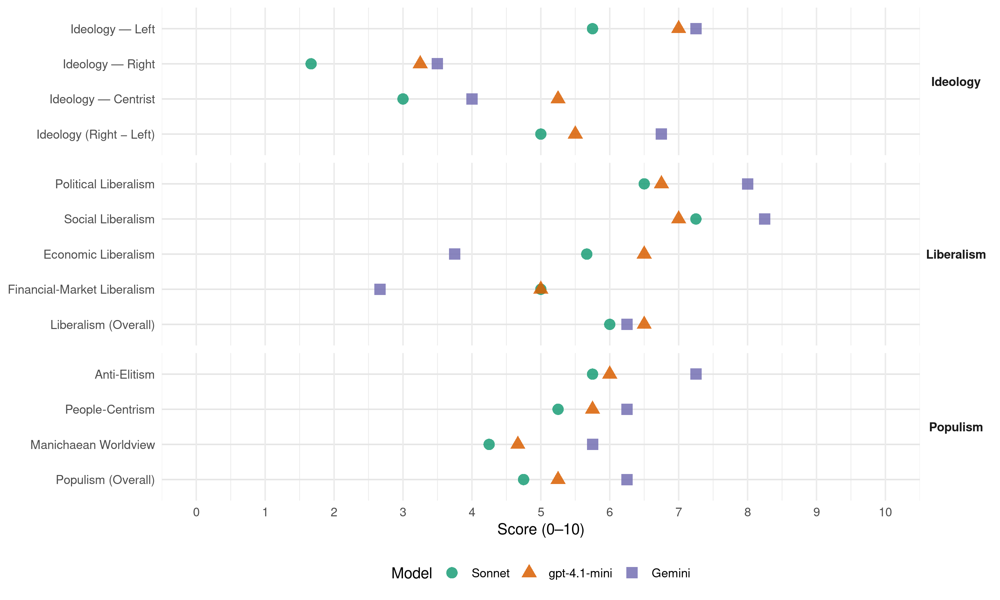

LMP (Hungary, 2014)
manifesto_id 86110_201404
Get full text: This site shows derived annotations and short verbatim quotes only. The full manifesto text is © Manifesto Project / WZB — obtain it via manifesto-project.wzb.eu using the manifesto_id above.
Headline scores
| Dimension | Sonnet | gpt-4.1-mini | Gemini |
|---|---|---|---|
| Populism (Overall) | 4.8 | 5.2 | 6.2 |
| Anti-Elitism | 5.8 | 6.0 | 7.2 |
| People-Centrism | 5.2 | 5.8 | 6.2 |
| Manichaean Worldview | 4.2 | 4.7 | 5.8 |
| Ideology (Right − Left) | 5.0 | 5.5 | 6.8 |
| Liberalism (Overall) | 6.0 | 6.5 | 6.2 |
| Political Liberalism | 6.5 | 6.8 | 8.0 |
| Social Liberalism | 7.2 | 7.0 | 8.2 |
| Economic Liberalism | 5.7 | 6.5 | 3.8 |
| Financial-Market Liberalism | 5.0 | 5.0 | 2.7 |
Evidence per dimension
Economic Liberalism
Gemini · score 4.0 · verified · chunk 1
“piaci verseny szabályozására”
E területen elképzeléseink szintén az ökoszociális piacgazdaság modelljének feleltethetők meg. Kitérünk a piaci verseny szabályozására, a cégekkel való
Gemini · score 3.0 · verified · chunk 2
“korlátozni kell közérdekből az Európai Unió szabadpiaci elveit”
Korlátozni kell közérdekből az Európai Unió szabadpiaci elveit, a földet ki kell vonni a tőke szabad áramlásának uniós alapelve alól.
Gemini · score 4.0 · verified · chunk 3
“piaci versenyt súlyosan torzító, a korrupciós”
meg kell szüntetni a piaci versenyt súlyosan torzító, a korrupciós, illetve az átláthatatlan, a szociális
Gemini · score 4.0 · verified · chunk 4
“innovatív vállalkozások helyzetbe hozását. Az LMP”
az innováció regionális rendszerének fejlesztését, az innovatív vállalkozások helyzetbe hozását. Az LMP mindenekelőtt a környezetileg és társadalmilag
gpt-4.1-mini · score 6.0 · verified · chunk 1
“versenyt úgy szabályoznánk, hogy az tekintettel legyen a környezetre és a társadalomra”
…A versenyt úgy szabályoznánk, hogy az tekintettel legyen a környezetre és a társadalomra: a piaci szereplők és a társadalom bevonásával kialakított szabályokon nyugvó, korrekt verseny legyen, ne vadkapitalizmus!…
gpt-4.1-mini · score 6.0 · verified · chunk 2
“olcsó hiteleket kell biztosítani a vidéki vállalkozásoknak”
A támogatások növekvő hányada mellett olcsó hiteleket kell biztosítani a vidéki vállalkozásoknak. Kell egy olyan új hitelezési szegmens, amely nem csak és elsősorban a megtérülések gyorsasága és biztonsága alapján szelektálja a beruházásokat, hanem inkább a fenntarthatósági szempontok alapján.
gpt-4.1-mini · score 7.0 · verified · chunk 3
“a mikro-és kisvállalkozások számára; hogy a vállalkozásfejlesztési támogatásokat ne az egyedi vállalkozásokra, hanem egy-egy település, térség komplex fejlesztésére célozzák”
Ehhez nélkülözhetetlen, hogy kedvezőbb legyen a gazdasági környezet a mikro-és kisvállalkozások számára; hogy a vállalkozásfejlesztési támogatásokat ne az egyedi vállalkozásokra, hanem egy-egy település, térség komplex fejlesztésére célozzák; hogy az adózási és adminisztratív szabályok úgy változzanak, melyek a mikro-és kisvállalkozások, családi vállalkozások talpon maradását segíti.
gpt-4.1-mini · score 7.0 · verified · chunk 4
“a zöldgazdaság a legnagyobb munkahelyteremtő potenciállal rendelkező ágazat”
Európa fejlettebb országaiban már ma is az energiatakarékosság elősegítését, az energiahatékonyság növelését, a megújulóenergia-ipart, a hulladék keletkezésének megelőzését, a hulladék-és a másodnyersanyag-hasznosítást, illetve a természetkímélő agrártermelést magában foglaló zöldgazdaság a legnagyobb munkahelyteremtő potenciállal rendelkező ágazat.
Sonnet · score 5.0 · verified · chunk 1
“korrekt verseny legyen, ne vadkapitalizmus”
a piaci szereplők és a társadalom bevonásával kialakított szabályokon nyugvó, korrekt verseny legyen, ne vadkapitalizmus!
Sonnet · score 4.0 · mixed · chunk 2
“Korlátozni kell közérdekből az Európai Unió szabadpiaci elveit”
Korlátozni kell közérdekből az Európai Unió szabadpiaci elveit, a földet ki kell vonni a tőke szabad áramlásának uniós alapelve alól.
Sonnet · score 6.0 · verified · chunk 3
“piaci versenyt súlyosan torzító”
nyilvánvalóan meg kell szüntetni a piaci versenyt súlyosan torzító, a korrupciós, illetve az átláthatatlan, a szociális és környezeti bajokat növelő támogatásokat.
Sonnet · score 6.0 · verified · chunk 4
“gazdaság versenyképességének”
a gazdaság versenyképességének és a gazdasági szereplők együttműködő készségének javítása, a gazdasági aktivitás növelése
Financial-Market Liberalism
Gemini · score 3.0 · verified · chunk 1
“kamatot a lengyel példához hasonlóan maximalizálnánk”
Ezért a kamatot a lengyel példához hasonlóan maximalizálnánk „eredeti valuta alapkamata + országkockázat” módon.
Gemini · score 2.0 · verified · chunk 2
“a kamatot a lengyel példához hasonlóan maximalizálnánk”
Ezért a kamatot a lengyel példához hasonlóan maximalizálnánk „eredeti valuta alapkamata + országkockázat” módon.
Gemini · score 3.0 · verified · chunk 3
“új hitelszövetkezetek, államilag egyszer feltöltött”
csekély megtakarítással rendelkező lakosság számára új hitelszövetkezetek, államilag egyszer feltöltött és garantált visszatérülő alapok
gpt-4.1-mini · score 5.0 · verified · chunk 1
“a pénzügyi fogyasztóvédelem erősítése is, ami ma a verseny hiánya miatt gyenge”
…Javítaná az adósok helyzetét a pénzügyi fogyasztóvédelem erősítése is, ami ma a verseny hiánya miatt gyenge…
gpt-4.1-mini · score 5.0 · verified · chunk 2
“a pénzügyi fogyasztóvédelem erősítése is, ami ma a verseny hiánya miatt gyenge”
Javítaná az adósok helyzetét a pénzügyi fogyasztóvédelem erősítése is, ami ma a verseny hiánya miatt gyenge. Kötelezni kell a bankokat, hogy a mobiltelefonos számhordozáshoz hasonló egyszerű eljárással lehessen bankot váltani.
gpt-4.1-mini · score 4.0 · mixed · chunk 3
“a tranzakciós adónál tehát a felső limit eltörlendő mindenféle tranzakcióra”
A tranzakciós adóval a Fidesz alaposan elszámolta magát, leginkább egy oknak köszönhetően, ami egyben az adó igazságtalanságát is okozza: a felső limitnek. A felső limit azt jelenti, hogy a nagyobb cégek és spekulánsok lényegében elkerülhetik ezt az adónemet. A tranzakciós adónál tehát a felső limit eltörlendő mindenféle tranzakcióra.
Sonnet · score 5.0 · verified · chunk 1
“pénzügyi fogyasztóvédelem erősítése”
Javítaná az adósok helyzetét a pénzügyi fogyasztóvédelem erősítése is, ami ma a verseny hiánya miatt gyenge.
Sonnet · score 4.0 · mixed · chunk 2
“pénzügyi fogyasztóvédelem erősítése”
Javítaná az adósok helyzetét a pénzügyi fogyasztóvédelem erősítése is, ami ma a verseny hiánya miatt gyenge. Kötelezni kell a bankokat, hogy a mobiltelefonos számhordozáshoz hasonló egyszerű eljárással lehessen bankot váltani.
Sonnet · score 5.0 · verified · chunk 3
“tranzakciós adónál tehát a felső limit eltörlendő”
A tranzakciós adónál tehát a felső limit eltörlendő mindenféle tranzakcióra. Az így befolyó többletbevétel nehezen számszerűsíthető
Sonnet · score 5.0 · verified · chunk 4
“Zöld Beruházási Alapot”
ZBR (Zöld Beruházási Rendszer) átalakításával létre kell hozni a Zöld Beruházási Alapot, amelynek forrásait 100 milliárd forintra bővítve
Political Liberalism
Gemini · score 8.0 · verified · chunk 1
“alkotmányos demokrácia helyreállítása érdekében”
Távlati céljaink fenntartása mellett elsődleges fontosságúnak tartjuk azonban, hogy az alkotmányos demokrácia helyreállítása érdekében minden további alkotmányozási
Gemini · score 8.0 · verified · chunk 2
“visszaállítanánk az Országos Fogyatékosügyi Program végrehajtása feletti parlamenti kontrollt”
Törvényi szinten garantálnánk az Országos Fogyatékosságügyi Tanács működését. Visszaállítanánk az Országos Fogyatékosügyi Program végrehajtása feletti parlamenti kontrollt.
Gemini · score 8.0 · verified · chunk 3
“demokrácia alapelveivel, és azokat az iskolákban”
diákok megismerkedhessenek a demokrácia alapelveivel, és azokat az iskolákban létrehozott, a jelenlegi többségi gyakorlattal
Gemini · score 8.0 · verified · chunk 4
“zöld fékek és ellensúlyok” kiiktatása korántsem”
bólogató pártkatonákat ültetve. A „zöld fékek és ellensúlyok” kiiktatása korántsem volt véletlen, mint ahogyan azt számtalan példa mutatja.
gpt-4.1-mini · score 6.0 · verified · chunk 1
“a jogállam intézményrendszerét tovább bontották”
…A második Orbán-kormány regnálása alatt a helyzet tovább romlott. A jogállam intézményrendszerét tovább bontották, a társadalmi különbségek még tovább nőttek…
gpt-4.1-mini · score 7.0 · verified · chunk 2
“a nemi kvóta bevezetését a parlamentben”
Ezért az LMP javasolja a nemi kvóta bevezetését a parlamentben. Szoros párhuzamot találunk a parlamentek összetétele, az adott állam gazdaság-és társadalompolitikája, illetve az ország fejlődése között.
gpt-4.1-mini · score 7.0 · verified · chunk 3
“a demokrácia alapelveivel, és azokat az iskolákban létrehozott, a jelenlegi többségi gyakorlattal szemben valóban egyenrangúan működő intézményeken keresztül gyakorolhassák is”
Fontosnak tartjuk, hogy a diákok megismerkedhessenek a demokrácia alapelveivel, és azokat az iskolákban létrehozott, a jelenlegi többségi gyakorlattal szemben valóban egyenrangúan működő intézményeken keresztül gyakorolhassák is.
gpt-4.1-mini · score 7.0 · verified · chunk 4
“a tiszta, egészséges és biztonságos környezethez való jogot kiírták az alaptörvényből”
Az Orbán-kormány négy év alatt olyan dúlást vitt végbe a környezet-és természetvédelemben, amire a rendszerváltás óta nem volt példa. A zöldombudsmant lefokozták, a környezeti alapjogok közül a legfontosabbat, vagyis a legmagasabb szintű testi és lelki egészséghez való jogot kiírták az alaptörvényből, a hatósági intézményrendszert pedig drasztikus fogyókúrára fogták, az eltávolított szakemberek helyére bólogató pártkatonákat ültetve.
Sonnet · score 6.0 · verified · chunk 1
“részvételi demokráciát szeretnénk”
Részvétlen demokrácia helyett részvételi demokráciát szeretnénk, ahol a legitimáció forrása a jól informált, egyenjogú polgárok részvétele
Sonnet · score 6.0 · verified · chunk 2
“parlamenti kontrollt”
Visszaállítanánk az Országos Fogyatékosügyi Program végrehajtása feletti parlamenti kontrollt.
Sonnet · score 7.0 · verified · chunk 3
“demokráciára nevelő szerepének erősítését”
Az LMP különösen fontosnak tartja az iskolák demokráciára nevelő szerepének erősítését. A demokrácia gyakorlásának elsajátítása az iskolában kezdődik
Sonnet · score 7.0 · verified · chunk 4
“független zöldhatósági rendszer”
az LMP felfogása szerint a környezet-és természetvédelmi minisztérium a legfontosabb tárcák egyike a kormányban, a független zöldhatósági rendszer pedig hatékony garanciája
Liberalism (Overall)
Gemini · score 6.0 · verified · chunk 1
“ökoszociális piacgazdaság közjogi kereteit”
programunk első fejezetében az LMP által kívánatosnak vélt ökoszociális piacgazdaság közjogi kereteit vázoljuk fel.
Gemini · score 6.0 · verified · chunk 2
“nemek közötti esélyegyenlőség nem fontos társadalmi érdek”
Még ma sem tekinthetjük Magyarország társadalmát igazságosnak, hiszen a lakosság fele még mindig nem rendelkezik megfelelő politikai képviselettel, a nemek közötti esélyegyenlőség nem fontos társadalmi érdek.
Gemini · score 6.0 · verified · chunk 3
“demokrácia alapelveivel, és azokat az iskolákban”
diákok megismerkedhessenek a demokrácia alapelveivel, és azokat az iskolákban létrehozott, a jelenlegi többségi gyakorlattal
Gemini · score 7.0 · verified · chunk 4
“zöld fékek és ellensúlyok” kiiktatása korántsem”
bólogató pártkatonákat ültetve. A „zöld fékek és ellensúlyok” kiiktatása korántsem volt véletlen, mint ahogyan azt számtalan példa mutatja.
gpt-4.1-mini · score 6.0 · verified · chunk 1
“a jogállam intézményrendszerét tovább bontották”
…A második Orbán-kormány regnálása alatt a helyzet tovább romlott. A jogállam intézményrendszerét tovább bontották, a társadalmi különbségek még tovább nőttek…
gpt-4.1-mini · score 7.0 · verified · chunk 2
“a nemi kvóta bevezetését a parlamentben”
Ezért az LMP javasolja a nemi kvóta bevezetését a parlamentben. Szoros párhuzamot találunk a parlamentek összetétele, az adott állam gazdaság-és társadalompolitikája, illetve az ország fejlődése között.
gpt-4.1-mini · score 6.0 · verified · chunk 3
“a demokrácia alapelveivel, és azokat az iskolákban létrehozott, a jelenlegi többségi gyakorlattal szemben valóban egyenrangúan működő intézményeken keresztül gyakorolhassák is”
Fontosnak tartjuk, hogy a diákok megismerkedhessenek a demokrácia alapelveivel, és azokat az iskolákban létrehozott, a jelenlegi többségi gyakorlattal szemben valóban egyenrangúan működő intézményeken keresztül gyakorolhassák is.
gpt-4.1-mini · score 7.0 · verified · chunk 4
“a zöldgazdaság a legnagyobb munkahelyteremtő potenciállal rendelkező ágazat”
Európa fejlettebb országaiban már ma is az energiatakarékosság elősegítését, az energiahatékonyság növelését, a megújulóenergia-ipart, a hulladék keletkezésének megelőzését, a hulladék-és a másodnyersanyag-hasznosítást, illetve a természetkímélő agrártermelést magában foglaló zöldgazdaság a legnagyobb munkahelyteremtő potenciállal rendelkező ágazat.
Sonnet · score 6.0 · verified · chunk 1
“demokratikus jogállam tartalmi garanciáinak lebontását”
teljessé tették az alkotmányosság, a demokratikus jogállam tartalmi garanciáinak lebontását. Ezen a helyzeten az Alaptörvény öt módosítása még rontani is tudott.
Sonnet · score 6.0 · verified · chunk 2
“jogosultak tisztességes eljáráshoz való jogát”
Figyelembe véve a jogosultak tisztességes eljáráshoz való jogát, leállítanánk a megváltozott munkaképességűek erőltetett menetben zajló felülvizsgálatát.
Sonnet · score 6.0 · verified · chunk 3
“piaci versenyt súlyosan torzító”
nyilvánvalóan meg kell szüntetni a piaci versenyt súlyosan torzító, a korrupciós, illetve az átláthatatlan, a szociális és környezeti bajokat növelő támogatásokat.
Sonnet · score 6.0 · verified · chunk 4
“átlátható pályázatok rendszerét”
be kell vezetni a pozíciók betöltésénél a rögzített szakmai kompetenciák és az átlátható pályázatok rendszerét
Anti-Elitism
Gemini · score 8.0 · verified · chunk 1
“nemet mondanak az elmúlt negyedszázad politikai elitjére”
patrióta párt. Politikai otthon azoknak, akik nemet mondanak az elmúlt negyedszázad politikai elitjére, de nem kérnek a gyűlöletkeltésből sem.
Gemini · score 7.0 · verified · chunk 2
“a bankok apró trükkökkel komoly extraprofitra tettek szert”
forint gyengülése jelentősen nehezítette a devizahitelesek helyzetét, mindeközben a bankok apró trükkökkel komoly extraprofitra tettek szert a devizahitelesek kárára
Gemini · score 7.0 · verified · chunk 3
“saját klienseinek, oligarcháinak osztogatja a pénzeket”
Nemcsak arról van szó, hogy az éppen hatalmon lévő párt a saját klienseinek, oligarcháinak osztogatja a pénzeket, bár ez is súlyos károkat okoz
Gemini · score 7.0 · verified · chunk 4
“pártközeli oligarchák döntik el, hogy hol”
nem a jelen és a jövő generációk érdekei, hanem a pillanatnyi politikai akarat és a pártközeli oligarchák döntik el, hogy hol és mi épül az országban
gpt-4.1-mini · score 8.0 · verified · chunk 1
“politikai elit törvénytelen összefonódása”
…a választási kampányokban elköltött milliárdokból nyilvánvaló a politika és az új rend legfőbb nyerteseiből álló gazdasági elit törvénytelen összefonódása. A kartell-pártok gazdasági érdekcsoportjai foglyul ejtették a magyar politikát…
gpt-4.1-mini · score 6.0 · verified · chunk 2
“a szerződéskötések erőfölényen alapuló rendszerét”
A devizahitelezés hazai problémája jól példázza az emberek jogi kiszolgáltatottságát, a szerződéskötések erőfölényen alapuló rendszerét. Mindezt még tetézte az elmúlt évek helytelen politikája.
gpt-4.1-mini · score 7.0 · verified · chunk 3
“az éppen hatalmon lévő párt a saját klienseinek, oligarcháinak osztogatja a pénzeket”
Ez a folyamat különösen felgyorsult, amikor jelentős összegű uniós források érkeztek hazánkba. Nemcsak arról van szó, hogy az éppen hatalmon lévő párt a saját klienseinek, oligarcháinak osztogatja a pénzeket, bár ez is súlyos károkat okoz a társadalomnak.
gpt-4.1-mini · score 3.0 · verified · chunk 4
“a különböző elitcsoportok gyermekeinek kedvez”
Ugyanebből a megfontolásból szorgalmazzuk a tandíj megszüntetését is. A jelenlegi rendszer ugyanis a különböző elitcsoportok gyermekeinek kedvez, akik már a családból hozott tudásuk, fiatalon megszerzett készségeik és kapcsolataik következtében nagy valószínűséggel megszerzik a támogatott (elit) egyetemi helyeket, míg az ilyen lehetőségekkel nem rendelkezők jelentős, néha vállalhatatlan adóssággal kezdhetik a pályájukat.
Sonnet · score 8.0 · verified · chunk 1
“kartell-pártok gazdasági érdekcsoportjai foglyul ejtették”
A kartell-pártok gazdasági érdekcsoportjai foglyul ejtették a magyar politikát, ezáltal az országban megtermelt jövedelem tekintélyes hányada kifolyik a nemzetgazdaságból.
Sonnet · score 5.0 · verified · chunk 2
“a nagytőkétől a gazdálkodó családok”
Valódi földindulást akarunk a nagybirtoktól a kisbirtok felé, a nagytőkétől a gazdálkodó családok és az önfenntartó helyi közösségek felé, a gazdagoktól a szegények felé!
Sonnet · score 6.0 · verified · chunk 3
“az éppen hatalmon lévő párt a saját klienseinek, oligarcháinak osztogatja”
Nemcsak arról van szó, hogy az éppen hatalmon lévő párt a saját klienseinek, oligarcháinak osztogatja a pénzeket, bár ez is súlyos károkat okoz a társadalomnak.
Sonnet · score 4.0 · verified · chunk 4
“különböző elitcsoportok gyermekeinek kedvez”
A jelenlegi rendszer ugyanis a különböző elitcsoportok gyermekeinek kedvez, akik már a családból hozott tudásuk
Ideology — Centrist
Gemini · score 4.0 · verified · chunk 3
“helyi gazdaság szereplőit”
hanem abban, hogy hogyan lehet helyzetbe hozni a helyi gazdaság szereplőit. Rájuk – a mikro-és kisvállalkozásokra
gpt-4.1-mini · score 7.0 · verified · chunk 1
“a saját sorsuk iránt felelős, felnőtt állampolgárok visszahódítják a demokratikus politikát”
…az orvosság nem lehet más, mint az, hogy a saját sorsuk iránt felelős, felnőtt állampolgárok visszahódítják a demokratikus politikát…
gpt-4.1-mini · score 4.0 · verified · chunk 2
“a helyi közösségek rendelkezzenek”
A termőfölddel és a helyi természeti erőforrásokkal a helyi közösségek rendelkezzenek A termőföld kivonása az Európai Unión belül a „négy szabadság elve” alól!
gpt-4.1-mini · score 6.0 · verified · chunk 3
“a helyi közösségek érdekeinek képviselete mellett”
Mint ahogyan az a fentebbiekből is kiderül, az z LMP elkötelezett a helyi közösségek érdekeinek képviselete mellett. Támogatni kívánjuk a helyi szereplőket abban, hogy megtalálják a megfelelő válaszokat az olyan kihívásokra, mint a vidéki településen élők megélhetésének biztosítása, közmunkától való függőségének csökkentése.
gpt-4.1-mini · score 4.0 · verified · chunk 4
“a közösség egésze áll, benne hangsúlyosan az a mintegy 3,2 millió ember”
Kultúrpolitikánk középpontjában ezért a közösség egésze áll, benne hangsúlyosan az a mintegy 3,2 millió ember, akiket az eddigi kultúrpolitikai törekvések nem értek el, akiknek sorsára a hazai kultúrpolitikai törekvések alapvető befolyással bírnak, és viszont: akiknek a sorsa alapvető befolyással van teljes politikai közösségünk jövőjére.
Sonnet · score 3.0 · verified · chunk 1
“Politikai otthon azoknak, akik nemet mondanak”
Politikai otthon azoknak, akik nemet mondanak az elmúlt negyedszázad politikai elitjére, de nem kérnek a gyűlöletkeltésből sem.
Sonnet · score 2.0 · mixed · chunk 2
“tiltás vagy liberalizálás hamis dilemmájának”
Ezen a téren a tiltás vagy liberalizálás hamis dilemmájának erőltetése helyett a megelőzésre helyezzük a hangsúlyt.
Sonnet · score 3.0 · verified · chunk 3
“helyi közösségek bevonásával keresi meg a megfelelő válaszokat”
egy minden elemében a részvételiségre és partnerségre építő kormányzati modellt képviselünk, amely nem egy központi akaratot diktál, hanem a helyi közösségek bevonásával keresi meg a megfelelő válaszokat
Sonnet · score 3.0 · verified · chunk 4
“LMP a társadalmi igazságosság pártján áll”
Az LMP a társadalmi igazságosság pártján áll. Azt akarjuk, hogy mindenkinek egyforma lehetősége legyen
Ideology — Left
Gemini · score 8.0 · verified · chunk 1
“globális kapitalizmus önző logikája a bolygó lakói mellett”
van, ami nem eladó! A globális kapitalizmus önző logikája a bolygó lakói mellett végletekig kizsákmányolta magát a bolygót is.
Gemini · score 7.0 · verified · chunk 2
“a gazdagoktól a szegények felé”
Valódi földindulást akarunk a nagybirtoktól a kisbirtok felé, a nagytőkétől a gazdálkodó családok és az önfenntartó helyi közösségek felé, a gazdagoktól a szegények felé!
Gemini · score 7.0 · verified · chunk 3
“multikkal kötött stratégiai megállapodásokban gondolkodik”
amelyik nem kiemelt beruházásokban és a multikkal kötött stratégiai megállapodásokban gondolkodik, hanem abban, hogy hogyan
Gemini · score 7.0 · verified · chunk 4
“társadalmi igazságosság pártján áll. Azt akarjuk”
3. Szélesre tárt felsőoktatási kapuk, a vidéki felsőoktatás megerősítése Az LMP a társadalmi igazságosság pártján áll. Azt akarjuk, hogy mindenkinek egyforma
gpt-4.1-mini · score 8.0 · verified · chunk 1
“társadalmi igazságosság, a gazdasági növekedés és modernizáció eddigi útja járhatatlan”
…Fontos számunkra a társadalmi igazságosság, de belátjuk: a gazdasági növekedés és modernizáció eddigi útja járhatatlan…
gpt-4.1-mini · score 7.0 · verified · chunk 2
“a szegénység felszámolásának módszere nem az elitnek adott kedvezmények”
Az LMP programja nem a globalizált piac haszonélvezőire, nem a külső (akár multi, akár nemzeti) nagytőke bevonására, és nem is a közmunkára alapozza a vidékfejlesztést. A szegénység felszámolásának módszere nem az elitnek adott kedvezmények, a gazdagoknak juttatott többletforrások gyakorlata.
gpt-4.1-mini · score 7.0 · verified · chunk 3
“a társadalmi egyenlőtlenségeket”
Ez a legfontosabb kérdés: hogyan lehet talpra állítani a helyi gazdaságot, hogyan lehet minél több embert tisztességes jövedelmet biztosító munkához segíteni, és ezzel csökkenteni az alacsony foglalkoztatásból adódó társadalmi egyenlőtlenségeket.
gpt-4.1-mini · score 6.0 · verified · chunk 4
“a társadalmi igazságosság pártján áll”
Az LMP a társadalmi igazságosság pártján áll. Azt akarjuk, hogy mindenkinek egyforma lehetősége legyen a közoktatásban elsajátított tudása és teljesítménye révén bejutni a felsőoktatásba, függetlenül attól, hogy az ország melyik középiskolájából jelentkezik oda – tandíjmentesen!
Sonnet · score 7.0 · verified · chunk 1
“globális kapitalizmus önző logikája”
A globális kapitalizmus önző logikája a bolygó lakói mellett végletekig kizsákmányolta magát a bolygót is.
Sonnet · score 5.0 · verified · chunk 2
“kizsákmányolás, a szegénység és a területi egyenlőtlenségek csökkentése”
A gazdasági növekedés hajszolása helyett számunkra előrébb való a kizsákmányolás, a szegénység és a területi egyenlőtlenségek csökkentése, valamint a hátrányos helyzetű térségek, települések felzárkóztatása.
Sonnet · score 6.0 · verified · chunk 3
“az igazán gazdagok alig fizetnek be a közösbe”
Ma Magyarországon az igazán gazdagok alig fizetnek be a közösbe. Egyes kivételezett középosztálybeliek ennél ugyan többet fizetnek
Sonnet · score 5.0 · verified · chunk 4
“tandíj megszüntetését is”
Ugyanebből a megfontolásból szorgalmazzuk a tandíj megszüntetését is. A jelenlegi rendszer ugyanis a különböző elitcsoportok
Ideology (Right − Left)
Gemini · score 8.0 · verified · chunk 1
“Globalizáció- és kapitalizmus-kritikus”
Az LMP ökopolitikai párt, a sokféleség pártja. Zöld. Globalizáció- és kapitalizmus-kritikus. A természeti környezetért és a sokszínű
Gemini · score 7.0 · verified · chunk 2
“a gazdagoktól a szegények felé”
Valódi földindulást akarunk a nagybirtoktól a kisbirtok felé, a nagytőkétől a gazdálkodó családok és az önfenntartó helyi közösségek felé, a gazdagoktól a szegények felé!
Gemini · score 6.0 · verified · chunk 3
“multikkal kötött stratégiai megállapodásokban gondolkodik”
amelyik nem kiemelt beruházásokban és a multikkal kötött stratégiai megállapodásokban gondolkodik, hanem abban, hogy hogyan
Gemini · score 6.0 · verified · chunk 4
“társadalmi igazságosság pártján áll. Azt akarjuk”
3. Szélesre tárt felsőoktatási kapuk, a vidéki felsőoktatás megerősítése Az LMP a társadalmi igazságosság pártján áll. Azt akarjuk, hogy mindenkinek egyforma
gpt-4.1-mini · score 7.0 · verified · chunk 1
“politikai elit törvénytelen összefonódása”
…a választási kampányokban elköltött milliárdokból nyilvánvaló a politika és az új rend legfőbb nyerteseiből álló gazdasági elit törvénytelen összefonódása…
gpt-4.1-mini · score 5.0 · verified · chunk 2
“a szegénység felszámolásának módszere nem az elitnek adott kedvezmények”
Az LMP programja nem a globalizált piac haszonélvezőire, nem a külső (akár multi, akár nemzeti) nagytőke bevonására, és nem is a közmunkára alapozza a vidékfejlesztést. A szegénység felszámolásának módszere nem az elitnek adott kedvezmények, a gazdagoknak juttatott többletforrások gyakorlata.
gpt-4.1-mini · score 6.0 · verified · chunk 3
“a helyi közösségek érdekeinek képviselete mellett”
Mint ahogyan az a fentebbiekből is kiderül, az z LMP elkötelezett a helyi közösségek érdekeinek képviselete mellett. Támogatni kívánjuk a helyi szereplőket abban, hogy megtalálják a megfelelő válaszokat az olyan kihívásokra, mint a vidéki településen élők megélhetésének biztosítása, közmunkától való függőségének csökkentése.
gpt-4.1-mini · score 4.0 · verified · chunk 4
“a társadalmi igazságosság pártján áll”
Az LMP a társadalmi igazságosság pártján áll. Azt akarjuk, hogy mindenkinek egyforma lehetősége legyen a közoktatásban elsajátított tudása és teljesítménye révén bejutni a felsőoktatásba, függetlenül attól, hogy az ország melyik középiskolájából jelentkezik oda – tandíjmentesen!
Sonnet · score 7.0 · verified · chunk 1
“Globalizáció- és kapitalizmus-kritikus”
Az LMP ökopolitikai párt, a sokféleség pártja. Zöld. Globalizáció- és kapitalizmus-kritikus.
Sonnet · score 4.0 · verified · chunk 2
“szegénység felszámolásának módszere nem az elitnek adott kedvezmények”
A szegénység felszámolásának módszere nem az elitnek adott kedvezmények, a gazdagoknak juttatott többletforrások gyakorlata.
Sonnet · score 5.0 · verified · chunk 3
“az igazán gazdagok alig fizetnek be a közösbe”
Ma Magyarországon az igazán gazdagok alig fizetnek be a közösbe. Egyes kivételezett középosztálybeliek ennél ugyan többet fizetnek
Sonnet · score 4.0 · verified · chunk 4
“zöldgazdaság nálunk is gyors fejlődésnek induljon”
kívánjuk elérni, hogy a zöldgazdaság nálunk is gyors fejlődésnek induljon. Ezek az elemek részletesebben is megtalálhatók
Ideology — Right
Gemini · score 3.0 · verified · chunk 1
“felelősséget vállaló, patrióta párt”
A természeti környezetért és a sokszínű társadalomért felelősséget vállaló, patrióta párt. Politikai otthon azoknak, akik nemet mondanak
Gemini · score 4.0 · verified · chunk 2
“külföldiek tulajdonszerzését biztosító átmeneti mentesség”
Az uniós csatlakozási szerződésben a külföldiek tulajdonszerzését biztosító átmeneti mentesség indoka és feltétele volt a hazai földpiac kialakulatlansága
Gemini · score 3.0 · verified · chunk 3
“hazai termékek iránt könnyedén megkövetelhető”
olcsó és gyenge minőségű importtermékekkel szemben fel kell állítani a hazai termékek iránt könnyedén megkövetelhető magas minőségi követelményeket
Gemini · score 4.0 · verified · chunk 4
“határokon túl élő magyarsággal való szolidaritásunkra”
Ugyanezen elvekre és a határokon túl élő magyarsággal való szolidaritásunkra alapozva jogosnak tartjuk és támogatjuk a szomszéd államokban
gpt-4.1-mini · score 4.0 · verified · chunk 1
“Fontos a közösség és a kulturális önazonosság, de a kirekesztő közösségfelfogás vállalhatatlan”
…Fontos a közösség és a kulturális önazonosság, de a kirekesztő közösségfelfogás vállalhatatlan…
gpt-4.1-mini · score 4.0 · verified · chunk 2
“a helyi közösségek rendelkezzenek”
A termőfölddel és a helyi természeti erőforrásokkal a helyi közösségek rendelkezzenek A termőföld kivonása az Európai Unión belül a „négy szabadság elve” alól!
gpt-4.1-mini · score 3.0 · verified · chunk 3
“a hazai termékek iránt könnyedén megkövetelhető magas minőségi követelményeket”
Az olcsó és gyenge minőségű importtermékekkel szemben fel kell állítani a hazai termékek iránt könnyedén megkövetelhető magas minőségi követelményeket.
gpt-4.1-mini · score 2.0 · verified · chunk 4
“a magyar állam és a magyar társadalom fontos feladata a határokon túli magyarság önazonossága megőrzésének segítése”
Az LMP az Alapító Okiratában foglaltaknak megfelelően elismeri a nemzeti és etnikai kisebbséghez tartozó állampolgárok és közösségi szervezeteik jogát az őket érintő döntések meghozatalában és végrehajtásában való részvételre a modern Európában érvényesülő alapelvek (szubszidiaritás, lokalizmus, regionalizmus) alapján. Ugyanezen elvekre és a határokon túl élő magyarsággal való szolidaritásunkra alapozva jogosnak tartjuk és támogatjuk a szomszéd államokban élő magyar közösségek önkormányzati törekvéseit egyéni, helyi és regionális szinten egyaránt. A határokon túl élő magyarság a magyar nemzet alkotórésze, ezért az anyaország és a határokon túl élő magyarság közötti kapcsolatot a szolidaritás, a kölcsönös tisztelet és az egyenrangúság alapján kívánjuk alakítani. Valljuk, hogy a magyar állam és a magyar társadalom fontos feladata a határokon túli magyarság önazonossága megőrzésének segítése, a nemzeti nyelv és kultúra művelésének támogatásával.
Sonnet · score 2.0 · verified · chunk 1
“határokon túl élő magyarsággal”
az LMP szolidáris a határokon túl élő magyarsággal, jogosnak tartjuk és támogatjuk a szomszéd államokban élő magyar közösségek önkormányzati törekvéseit
Sonnet · score 2.0 · verified · chunk 3
“hazai termékek iránt könnyedén megkövetelhető magas minőségi követelményeket”
Az olcsó és gyenge minőségű importtermékekkel szemben fel kell állítani a hazai termékek iránt könnyedén megkövetelhető magas minőségi követelményeket.
Sonnet · score 1.0 · verified · chunk 4
“határokon túl élő magyarság”
Az LMP ezekre az elvekre alapozva támogatta a külhoni magyarok magyar állampolgárságát. Kiemelt feladatának tekinti a szomszédos országokban élő magyar politikai
Manichaean Worldview
Gemini · score 7.0 · verified · chunk 1
“paraván, ami mögött szabadon ki lehet fosztani az országot”
A fasisztázás és a kommunistázás az a paraván, ami mögött szabadon ki lehet fosztani az országot. A második Orbán-kormány regnálása alatt
Gemini · score 5.0 · verified · chunk 2
“a nagytőkével és az oligarchákkal szövetkezett állam”
A faluközösségek jobb gazdái lehetnek a földnek, mint a nagytőkével és az oligarchákkal szövetkezett állam.
Gemini · score 5.0 · verified · chunk 3
“gátlástalanul osztogatták a közpénzeket”
Az eddigi kormányok egyre gátlástalanul osztogatták a közpénzeket. Ez a folyamat különösen felgyorsult
Gemini · score 6.0 · verified · chunk 4
“dúlást vitt végbe a környezet-és természetvédelemben”
Az Orbán-kormány négy év alatt olyan dúlást vitt végbe a környezet-és természetvédelemben, amire a rendszerváltás óta nem volt példa.
gpt-4.1-mini · score 7.0 · verified · chunk 1
“fasisztázás és a kommunistázás az a paraván, ami mögött szabadon ki lehet fosztani az országot”
…Ez a politikai légkör egyszerre teszi megvitathatatlanná az ország tényleges sorskérdéseit és számon kérhetetlenné a politikai korrupciót. A fasisztázás és a kommunistázás az a paraván, ami mögött szabadon ki lehet fosztani az országot…
gpt-4.1-mini · score 5.0 · verified · chunk 2
“bankok apró trükkökkel komoly extraprofitra tettek szert”
mindeközben a bankok apró trükkökkel komoly extraprofitra tettek szert a devizahitelesek kárára – az állam pedig semmit nem tett ez ellen.
gpt-4.1-mini · score 2.0 · verified · chunk 4
“a politikai akarat minden racionális megfontolást a háttérbe szorít”
A kolontári vörösiszap-katasztrófa világosan megmutatta, mi vár egy olyan országra, amelyben a politikai akarat minden racionális megfontolást a háttérbe szorít, és ahol a környezetre csak akkor figyelnek oda, ha baj van.
Sonnet · score 6.0 · verified · chunk 1
“van, ami nem eladó”
Az a LMP az a párt, amely az elmúlt hónapokban is bizonyította létezésével: van, ami nem eladó!
Sonnet · score 4.0 · verified · chunk 2
“bankok apró trükkökkel komoly extraprofitra”
a bankok apró trükkökkel komoly extraprofitra tettek szert a devizahitelesek kárára – az állam pedig semmit nem tett ez ellen.
Sonnet · score 4.0 · verified · chunk 3
“A Fidesz várhatóan fenn akarja tartani”
Ez a rendszer radikálisan eltér a többi párt javaslataitól. A Fidesz várhatóan fenn akarja tartani a különadókra és eseti elvonásokra alapozott adórendszer-tákolmányát
Sonnet · score 3.0 · verified · chunk 4
“a kormány nyíltan a beruházói érdekek mellé állt”
ahol a kormány nyíltan a beruházói érdekek mellé állt a környezet és a lakosság szempontjaival szemben
People-Centrism
Gemini · score 7.0 · verified · chunk 1
“állampolgárok visszahódítják a demokratikus politikát”
az orvosság nem lehet más, mint az, hogy a saját sorsuk iránt felelős, felnőtt állampolgárok visszahódítják a demokratikus politikát, és helyreállítják
Gemini · score 6.0 · verified · chunk 2
“példázza az emberek jogi kiszolgáltatottságát”
A devizahitelezés hazai problémája jól példázza az emberek jogi kiszolgáltatottságát, a szerződéskötések erőfölényen alapuló rendszerét.
Gemini · score 6.0 · verified · chunk 3
“helyi közösségek érdekeinek képviselete mellett”
a z LMP elkötelezett a helyi közösségek érdekeinek képviselete mellett. Támogatni kívánjuk a helyi szereplőket
Gemini · score 6.0 · verified · chunk 4
“megújuló energiát az emberek kezébe kell”
foglalkoztatás és társadalmi igazságosság elősegítése érdekében a megújuló energiát az emberek kezébe kell adni. Kiemelt prioritásnak tartjuk
gpt-4.1-mini · score 7.0 · verified · chunk 1
“a saját sorsuk iránt felelős, felnőtt állampolgárok visszahódítják a demokratikus politikát”
…az orvosság nem lehet más, mint az, hogy a saját sorsuk iránt felelős, felnőtt állampolgárok visszahódítják a demokratikus politikát, és helyreállítják a demokrácia fogalmának eredeti jelentését…
gpt-4.1-mini · score 5.0 · verified · chunk 2
“az emberek jogi kiszolgáltatottságát”
A devizahitelezés hazai problémája jól példázza az emberek jogi kiszolgáltatottságát, a szerződéskötések erőfölényen alapuló rendszerét. Mindezt még tetézte az elmúlt évek helytelen politikája.
gpt-4.1-mini · score 6.0 · verified · chunk 3
“a helyi közösségek érdekeinek képviselete mellett”
Mint ahogyan az a fentebbiekből is kiderül, az z LMP elkötelezett a helyi közösségek érdekeinek képviselete mellett. Támogatni kívánjuk a helyi szereplőket abban, hogy megtalálják a megfelelő válaszokat az olyan kihívásokra, mint a vidéki településen élők megélhetésének biztosítása, közmunkától való függőségének csökkentése.
gpt-4.1-mini · score 5.0 · verified · chunk 4
“a közösség egésze áll, benne hangsúlyosan az a mintegy 3,2 millió ember”
Kultúrpolitikánk középpontjában ezért a közösség egésze áll, benne hangsúlyosan az a mintegy 3,2 millió ember, akiket az eddigi kultúrpolitikai törekvések nem értek el, akiknek sorsára a hazai kultúrpolitikai törekvések alapvető befolyással bírnak, és viszont: akiknek a sorsa alapvető befolyással van teljes politikai közösségünk jövőjére.
Sonnet · score 7.0 · verified · chunk 1
“saját sorsuk iránt felelős, felnőtt állampolgárok visszahódítják”
az orvosság nem lehet más, mint az, hogy a saját sorsuk iránt felelős, felnőtt állampolgárok visszahódítják a demokratikus politikát
Sonnet · score 5.0 · verified · chunk 2
“a helyi közösségek rendelkezzenek”
A termőfölddel a helyi közösségek rendelkezzenek! A helyi közösségeknek a helyi erőforrásokkal való önrendelkezési joga és igénye erősebb, mint a föld tőke- és árujellege.
Sonnet · score 5.0 · verified · chunk 3
“helyi közösségek érdekeinek képviselete mellett”
az LMP elkötelezett a helyi közösségek érdekeinek képviselete mellett. Támogatni kívánjuk a helyi szereplőket
Sonnet · score 4.0 · verified · chunk 4
“mindenkinek egyforma lehetősége legyen”
Azt akarjuk, hogy mindenkinek egyforma lehetősége legyen a közoktatásban elsajátított tudása és teljesítménye révén
Populism (Overall)
Gemini · score 7.0 · verified · chunk 1
“kartell-pártok gazdasági érdekcsoportjai foglyul ejtették a magyar politikát”
A kartell-pártok gazdasági érdekcsoportjai foglyul ejtették a magyar politikát, ezáltal az országban megtermelt jövedelem tekintélyes
Gemini · score 6.0 · verified · chunk 2
“a nagytőkével és az oligarchákkal szövetkezett állam”
A faluközösségek jobb gazdái lehetnek a földnek, mint a nagytőkével és az oligarchákkal szövetkezett állam.
Gemini · score 6.0 · verified · chunk 3
“saját klienseinek, oligarcháinak osztogatja a pénzeket”
Nemcsak arról van szó, hogy az éppen hatalmon lévő párt a saját klienseinek, oligarcháinak osztogatja a pénzeket, bár ez is súlyos károkat okoz
Gemini · score 6.0 · verified · chunk 4
“pártközeli oligarchák döntik el, hogy hol”
nem a jelen és a jövő generációk érdekei, hanem a pillanatnyi politikai akarat és a pártközeli oligarchák döntik el, hogy hol és mi épül az országban
gpt-4.1-mini · score 7.0 · verified · chunk 1
“politikai elit törvénytelen összefonódása”
…a választási kampányokban elköltött milliárdokból nyilvánvaló a politika és az új rend legfőbb nyerteseiből álló gazdasági elit törvénytelen összefonódása. A kartell-pártok gazdasági érdekcsoportjai foglyul ejtették a magyar politikát…
gpt-4.1-mini · score 5.0 · verified · chunk 2
“a szerződéskötések erőfölényen alapuló rendszerét”
A devizahitelezés hazai problémája jól példázza az emberek jogi kiszolgáltatottságát, a szerződéskötések erőfölényen alapuló rendszerét. Mindezt még tetézte az elmúlt évek helytelen politikája.
gpt-4.1-mini · score 6.0 · verified · chunk 3
“az éppen hatalmon lévő párt a saját klienseinek, oligarcháinak osztogatja a pénzeket”
Ez a folyamat különösen felgyorsult, amikor jelentős összegű uniós források érkeztek hazánkba. Nemcsak arról van szó, hogy az éppen hatalmon lévő párt a saját klienseinek, oligarcháinak osztogatja a pénzeket, bár ez is súlyos károkat okoz a társadalomnak.
gpt-4.1-mini · score 3.0 · verified · chunk 4
“a különböző elitcsoportok gyermekeinek kedvez”
Ugyanebből a megfontolásból szorgalmazzuk a tandíj megszüntetését is. A jelenlegi rendszer ugyanis a különböző elitcsoportok gyermekeinek kedvez, akik már a családból hozott tudásuk, fiatalon megszerzett készségeik és kapcsolataik következtében nagy valószínűséggel megszerzik a támogatott (elit) egyetemi helyeket, míg az ilyen lehetőségekkel nem rendelkezők jelentős, néha vállalhatatlan adóssággal kezdhetik a pályájukat.
Sonnet · score 7.0 · verified · chunk 1
“politika és a gazdasági elit törvénytelen összefonódása”
nyilvánvaló a politika és a gazdasági elit törvénytelen összefonódása. Ez nem a Fidesz uralma alatt kezdődött, de mára olyan fokra ért
Sonnet · score 4.0 · verified · chunk 2
“a gazdagoktól a szegények felé”
Valódi földindulást akarunk a nagybirtoktól a kisbirtok felé, a nagytőkétől a gazdálkodó családok és az önfenntartó helyi közösségek felé, a gazdagoktól a szegények felé!
Sonnet · score 5.0 · verified · chunk 3
“az éppen hatalmon lévő párt a saját klienseinek, oligarcháinak osztogatja”
Nemcsak arról van szó, hogy az éppen hatalmon lévő párt a saját klienseinek, oligarcháinak osztogatja a pénzeket, bár ez is súlyos károkat okoz a társadalomnak.
Sonnet · score 3.0 · verified · chunk 4
“pártközeli oligarchák döntik el”
nem a jelen és a jövő generációk érdekei, hanem a pillanatnyi politikai akarat és a pártközeli oligarchák döntik el
Social Liberalism